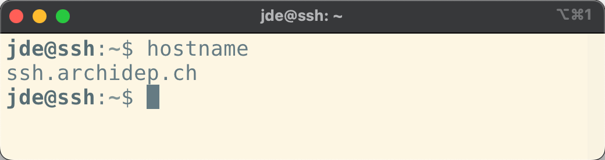
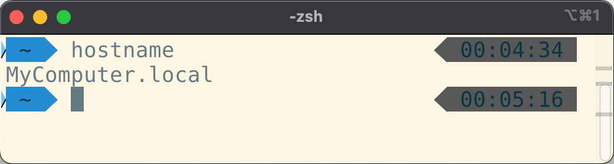
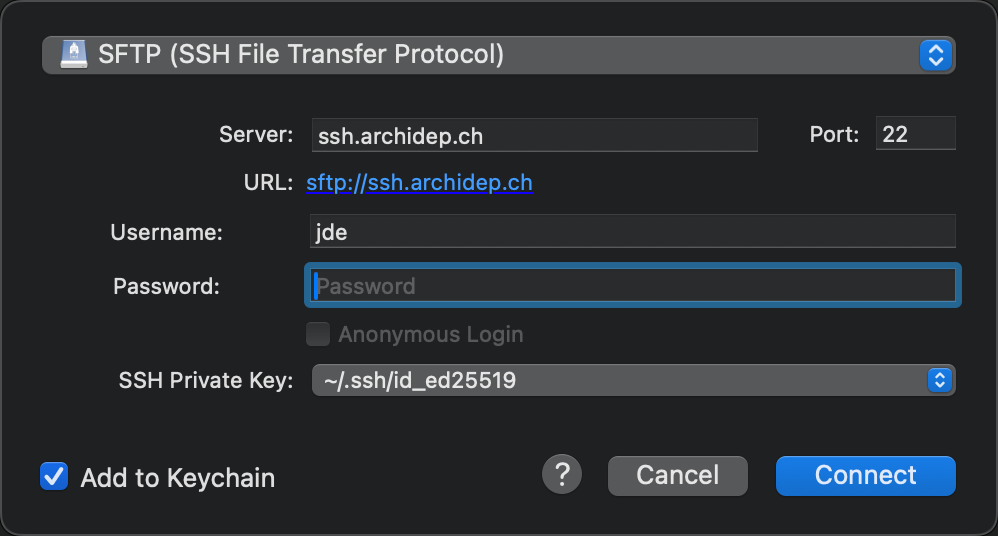

Answering yes without checking the key fingerprint exposes you to a potential man-in-the-middle attack. An attacker could make you connect to a compromised server and then intercept all traffic going through the SSH connection, including your password.
Hello SSH
In this series of exercises, you will learn to use the ssh command to connect
to a remote server, and how to copy files to and from such a server using
various tools. Then you will use them to follow a parrot to the remote land of
Avalon.
On this page
Table of contents
 Legend
Legend
Parts of this exercise are annotated with the following icons:
-
 A task you MUST perform to complete the exercise
A task you MUST perform to complete the exercise
-
 Optional step that you may perform to make sure that
everything is working correctly, or to set up additional tools that are not required but can
help you
Optional step that you may perform to make sure that
everything is working correctly, or to set up additional tools that are not required but can
help you
-
 Advanced tips on how to go further (or
challenges!)
Advanced tips on how to go further (or
challenges!)
 The end of the exercise
The end of the exercise-
 The architecture of the software you ran or
deployed during this exercise
The architecture of the software you ran or
deployed during this exercise
-
 Troubleshooting tips: how to fix common problems you might
encounter
Troubleshooting tips: how to fix common problems you might
encounter
Connect to the exercise server
An SSH exercise server has been prepared so that you can learn to use the ssh
command and other SSH-based tools. Your username and password for this server
are shown on the dashboard, along with the fingerprints of the
server’s SSH host keys.
As we’ve seen, the basic syntax of the SSH command is as follows:
$> ssh <username>@<hostname>
To connect to the server:
-
Determine the SSH command to connect to the exercise server. Replace the
<username>placeholder by the username shown on the dashboard, and the<hostname>placeholder byssh.archidep.ch. -
Execute that command in your console.
-
Since you are probably connecting to this server for the first time, you should get the initial SSH connection warning indicating that the authenticity of the host cannot be established:
The authenticity of host 'ssh.archidep.ch (W.X.Y.Z)' can't be established.ED25519 key fingerprint is SHA256:...Are you sure you want to continue connecting (yes/no/[fingerprint])?Before accepting, you should verify that the key fingerprint in the warning message corresponds to one of the fingerprints shown on the dashboard. You can do that by pasting the fingerprint from the dashboard (the one that starts with
SHA256:) instead of answeringyes. Your SSH client will compare it with the fingerprint the server sent, and will only continue if they match.
- Enter or paste your password when prompted.
The password’s characters will not appear as you type or after pasting. This is a feature, not a bug. Passwords are not displayed to make it harder for someone looking over your shoulder to read them.
You should now be connected to the server. You should see a welcome banner giving you some information about the server’s operating system, and the prompt should have changed. Any command you type is now executed on the remote server.
Spot the difference
Run the following commands on the server:
Open another console and run these commands again. Since this is a fresh console, they will be executed on your local machine this time. Observe the difference in output when you are connected to the server or running the commands on your local machine.
Connected to an SSH server

On your local machine

The hostname command prints the network name of the computer you are running
it on. This is likely to be different on your local machine than on the SSH
exercise server.
Another interesting command to run to see the difference between your machine
and the server is the uname command. Try running it on the
server and your machine. Read the documentation and try some of its options to
get more information about your machine and the server.
If you want to quickly run a command on a remote server with SSH and immediately disconnect, you can do so by providing more arguments to the SSH command:
$> ssh <username>@<hostname> [command]
For example, assuming your username is jde, open a new console and execute the
following commands:
$> ssh jde@ssh.archidep.ch hostname
ssh.archidep.ch
$> hostname
MyComputer.local
You can see from the output that the first command was run on the server, but that you are no longer connected by the time you ran the second command.
Set up public key authentication
The goal of this step is to generate a public/private key pair on your machine and to configure SSH to use public key authentication instead of password authentication on the SSH exercise server.
This will improve security and avoid having to type your password on each SSH connection. You will also need this key pair for the rest of the course: to authenticate to GitHub, and to connect to your own server later.
Disconnect from the server (with the exit command) or open a new console
to run commands on your local machine.
Do I already have a key pair?
By default, SSH keys are stored in the .ssh directory in your home directory:
$> ls ~/.ssh
id_ed25519 id_ed25519.pub
If you have the id_ed25519 and id_ed25519.pub files, you’re good to go, since
SSH expects to find your main Ed25519 private key at
~/.ssh/id_ed25519. You might also have a default key pair using another
algorithm, such as an ECDSA key pair with files named id_ecdsa and
id_ecdsa.pub, or an RSA key pair with files named id_rsa and
id_rsa.pub if your system has an older SSH client.
If the directory doesn’t exist or is empty, you don’t have a key pair yet.
Note
You may have a key with a different name, e.g. github_rsa & github_rsa.pub,
as it is sometimes generated by some software. You can use this key if you want,
but since it doesn’t have the default name, you will have to add a -i ~/.ssh/github_rsa option to all your SSH commands. Generating a new key with
the default name for command line use would probably be easier.
Warning
On Windows, generate and keep your key pair in the WSL, in the ~/.ssh
directory of your Linux home directory. Do not copy it to or from your Windows
files (under /mnt/c). Files stored there appear to be readable by anyone, and
SSH refuses to use a private key that other people can read. It stops with a
WARNING: UNPROTECTED PRIVATE KEY FILE! error.
Generate a private-public key pair
Perform this step on your local machine, not on the SSH exercise server.
If you do not already have a key pair, you should generate one for the rest of
the exercise and the course. You will use the ssh-keygen command.
The ssh-keygen command is usually installed along with SSH and can generate a
key pair for you. It will ask you a couple of questions about the key:
- Where do you want to save it? Simply press enter to use the proposed default
location (
~/.ssh/id_ed25519for an Ed25519 key,~/.ssh/id_rsafor an RSA key, etc). - What password do you want to protect the key with? Enter a password or simply press enter to use no password.
Simply running ssh-keygen with no arguments will ask you the required
information and generate a new key pair using your SSH client’s default
algorithm:
$> ssh-keygen
Generating public/private ed25519 key pair.
Enter file in which to save the key (/home/jde/.ssh/id_ed25519):
Created directory '/home/jde/.ssh'.
Enter passphrase (empty for no passphrase):
Enter same passphrase again:
Your identification has been saved in /home/jde/.ssh/id_ed25519.
Your public key has been saved in /home/jde/.ssh/id_ed25519.pub.
The key fingerprint is:
SHA256:MmwL9n4KOUCuLoyvGJ7nWRDXjTSGAXO8AcCNVqmDJH0 jde@497820feb22a
The key's randomart image is:
+--[ED25519 256]--+
|.o===oo+ |
|.=.oE++ + |
|= oo .oo . |
|.= oo |
| +.o = S |
| . o.= + |
|= +.o |
|*o..o+ . |
|+*+o oo |
+----[SHA256]-----+
If you choose to enter a passphrase, you will not see anything in your terminal when you type it. This is intentional, so that no one looking over your shoulder can read it.
Should I protect my key with a password?
If you enter no password, your key will be stored in the clear. This will be convenient as you will not have to enter a password when you use it. However, any malicious code you allow to run on your machine could easily steal it.
If your key is protected by a password, you can run an SSH agent to unlock it only once per session instead of every time you use it.
You can verify that a key has indeed been created by listing the contents of the SSH directory:
$> ls ~/.ssh
id_ed25519 id_ed25519.pub
Use ssh-copy-id to copy your public key to the server
The ssh-copy-id command uses the same syntax as the ssh command to connect
to another computer (e.g. ssh-copy-id jde@example.com). Instead of opening a
new shell, however, it will copy your local public key(s) to your user
account’s authorized_keys file on the target computer.
Execute that command now (replacing jde with your username):
$> ssh-copy-id jde@ssh.archidep.ch
You will probably have to enter your password, so that ssh-copy-id can log in
and copy your key. But once that is done, SSH should switch to public key
authentication and you should not have to enter your password again to log in.
SSH will use your private key to authenticate you instead. (You may have to
enter your private key’s password though, if it is protected by one.)
Once you have set up public key authentication for an SSH server, that server is in possession of your public key. Your SSH client can then use your private key to prove that you are the owner of this public key, using the mathematical relationship between the two. Your private key is never sent to the server during this process.
Connect with the ssh command again to see public key authentication in action:
$> ssh jde@ssh.archidep.ch
If it worked, the connection should now open without asking for a password. Your user account is still secured: authentication was performed transparently by your SSH client, using your private key.
The authorized_keys file
Now that you are connected to the server, you can check that your public key
was added to your user’s authorized_keys file:
$> ls ~/.ssh
authorized_keys
$> cat ~/.ssh/authorized_keys
ssh-ed25519 AAAAC3NzaC1lZDI1NTE5AAAA... jde@497820feb22a
When your SSH client connects to the SSH server, the server will look for your public key (or keys) in this file and ask the SSH client to prove that it owns one of the keys (using the corresponding private key which rests on your local machine) using asymmetric cryptography.
The private key is never transmitted, and this new authentication process is transparent, handled automatically for you by the SSH client and server, hence why you no longer have to enter a password.
You can also create the authorized_keys file manually. Note that both the file
and its parent directory must have permissions that make it accessible only to
your user account, or the SSH server will refuse to use it for security reasons.
The following commands can set up the file on the target machine:
$> mkdir -p ~/.ssh && chmod 700 ~/.ssh
$> touch ~/.ssh/authorized_keys
$> chmod 600 ~/.ssh/authorized_keys
The chmod command changes the permission of files. We will learn
more about this command later on in the course.
Is your password gone?
Disconnect from the server again. Now connect while telling your SSH client not to use public key authentication:
$> ssh -o PubkeyAuthentication=no jde@ssh.archidep.ch
What happens? Why?
The server asks for your password again, and your password still works.
ssh-copy-id added a new way to authenticate to your user account. It did
not replace your password. Your SSH client now tries your key first, which is
why you no longer have to type your password, but the password is still
accepted.
Protecting a server with keys only means also disabling password authentication on the server, which is done in the SSH server’s configuration. The virtual server you will create later in the course does not accept passwords at all: you will give it your public key when you create it.
Which key is where?
You have now seen several files containing keys, on two different machines.
Copy the following table and fill it in. For each file, write on which machine
it is stored (your machine or the server), what it contains, and whether it
must be kept secret. You can look for them with ls on both machines. The
server’s own keys are in the /etc/ssh directory.
| File | Machine | Contains | Secret? |
|---|---|---|---|
~/.ssh/id_ed25519 |
|||
~/.ssh/id_ed25519.pub |
|||
~/.ssh/authorized_keys |
|||
~/.ssh/known_hosts |
|||
/etc/ssh/ssh_host_ed25519_key |
|||
/etc/ssh/ssh_host_ed25519_key.pub |
Then answer these questions:
- Which of these files is used to prove to the server that you are you?
- Which of these files is used to prove to you that the server is the right server?
- An attacker copies your
id_ed25519.pubfile. What can they do with it?
| File | Machine | Contains | Secret? |
|---|---|---|---|
~/.ssh/id_ed25519 |
Your machine | Your private key | Yes |
~/.ssh/id_ed25519.pub |
Your machine | Your public key | No |
~/.ssh/authorized_keys |
The server | The public keys allowed to log in as your user | No |
~/.ssh/known_hosts |
Your machine | The public keys of the servers you trust | No |
/etc/ssh/ssh_host_ed25519_key |
The server | The server’s private host key | Yes |
/etc/ssh/ssh_host_ed25519_key.pub |
The server | The server’s public host key | No |
- Your private key,
~/.ssh/id_ed25519, proves to the server that you are you. The server checks the proof with your public key, which it finds in~/.ssh/authorized_keys. - The server’s private host key proves to your machine that it is the right
server. Your SSH client checks the proof with the server’s public host key.
The first time, you check it yourself with the fingerprint. After that, your
SSH client finds it in
~/.ssh/known_hosts. - Nothing harmful. A public key can only be used to check a proof, not to make one. This is why you can give your public key to any server or service. The attacker would need your private key to log in as you.
The two sides work the same way: each one keeps a private key, and the other side keeps the matching public key.
Copy a file with the scp command
The scp (secure copy) command works like the cp
(copy) command, which copies files on your own machine,
except that it can copy files to and from other computers that have an SSH
server running. It uses SSH to transfer the files.
Like cp, it takes the file to copy first, then where to copy it:
$> scp <source> <destination>
A file on the server is written with the same <username>@<hostname> as in the
ssh command, then a colon (:), then the path of the file on the server. For
example, assuming your username is jde:
scp hello.txt jde@ssh.archidep.ch:hello.txtcopies the filehello.txtfrom your machine to the server.scp jde@ssh.archidep.ch:hello.txt hello.txtcopies it from the server to your machine.
The side that comes first is where the file comes from. Run scp on your own
machine, not on the server: your machine is the one that connects to the
server, like with the ssh command.
A path on the server that does not start with / starts in your home directory
on the server. jde@ssh.archidep.ch:hello.txt is the file ~/hello.txt of
the jde user, on the server.
You will use scp in a moment, on your way to the remote land of Avalon.
Here are a few additional examples of how to use the scp command:
-
scp foo.txt jde@192.168.50.4:bar.txtCopy the local file
foo.txtto a file namedbar.txtinjde’s home directory on the remote computer. -
scp foo.txt jde@192.168.50.4:Copy the file to
jde’s home directory with the same file name. -
scp foo.txt jde@192.168.50.4:/tmp/foo.txtCopy the file to the absolute path
/tmp/foo.txton the remote computer. -
scp jde@192.168.50.4:foo.txt jsmith@192.168.50.5:bar.txtCopy the file from one remote computer to another.
-
scp -r foo jde@192.168.50.4:fooRecursively (the
-roption) copy the contents of directoryfooto the remote computer (a recursive copy means that the directory and all its subdirectories are copied).
Copy files with an SFTP application
SFTP is an alternative to the original FTP protocol to transfer files. Since FTP is insecure (e.g. passwords are sent unencrypted), SFTP is an alternative that goes through SSH’s secure channel and therefore poses fewer security risks.
Most modern FTP clients support SFTP. Here’s a couple:
Many code editors also have SFTP support available through plugins.
Install one of these applications (or use your favorite SFTP application if you already have one) and connect to the SSH exercise server with public key authentication. You will need to configure a connection with the following information:
- Protocol: SFTP
- Host, hostname or server address:
ssh.archidep.ch - Username: the username shown on the dashboard
- Port: 22 (the standard SSH port)
- Private key (or key file): your private key,
~/.ssh/id_ed25519
Leave the password empty. The application will use your private key to prove
that it owns the public key in your authorized_keys file on the server, just
like the ssh command does. Make sure to select the private key
(id_ed25519), not the public key (id_ed25519.pub).
How to use these parameters depends on which application you use. They may not be named exactly like this.
For example, here’s how to do it with Cyberduck:

The .ssh directory is hidden, so it may not appear when you browse for your
private key:
- On macOS, use the
Cmd-Shift-.shortcut in the file selection window to display hidden files and directories. - On Windows, your private key is in the WSL, not in your Windows files. Type
\\wsl.localhost\in the address bar of the file selection window, then open your Linux distribution’s directory (e.g.Ubuntu), thenhome, your Linux username, and.ssh. You can also find your Linux files under Linux in the sidebar of the Windows file explorer. - On most Linux distributions, the file manager will have an option to show hidden files under its menu.
On Windows, FileZilla and WinSCP may ask you to convert your private key to another format. You can do so. The converted file is a copy of your private key: keep it as private as the original.
Warning
When connecting for the first time, the application may issue the same initial connection warning as when you connect using the command line. Be sure to check the key fingerprint.
Once you have successfully connected to the server, copy a file to the server using the SFTP application. These applications will usually allow you to drag-and-drop files to and from the server. Play with it a bit and see what you can do.
Now you know another way to copy files over SSH.
The remote land of Avalon
Did you find the treasure of Skull Island in Hello Shell? Then you remember the parrot. It took you to Skull Island, and when you opened the chest, it flew away over the sea, far from your computer, to the remote land of Avalon. Follow it, and take your treasure with you: someone there has heard about it.
You did not play the treasure hunt? A parrot landed on your window this morning. It looked at you, said “SQUAWK!”, and flew away over the sea, to the remote land of Avalon. Follow it.
The rule of Avalon. Avalon is on the SSH exercise server. Your own computer is your own land. Each step asks you to do something on the right machine, so before you type a command, know which machine your terminal is connected to. It helps to keep two terminals open: one logged in to the server, and one on your own computer.
To go to Avalon, log in to the server with your key, and take the barge:
$> dock
Then follow what it says. Your goal: find out where the parrot is.
On the way, you will:
- Show the server that you came with your key, not your password.
- Copy a file from your computer to the server with
scp, and another one from the server to your computer. - Run a command on the server without logging in.
Stuck? There is a hint on Avalon: cat .hint in ~/avalon, on the server. Want
to start over? Run dock --restart on the server.
On your computer, log in to the server, then take the barge on the server:
$> ssh jde@ssh.archidep.ch
$> dock
$> cd ~/avalon
$> ./merlin
$> exit
Merlin wants a gift from your own land. On your computer, send him your treasure if you played the treasure hunt, or what your computer says about itself if you did not:
$> scp ~/treasure-hunt/bag/treasure jde@ssh.archidep.ch:avalon/
$> uname -a > land.txt
$> scp land.txt jde@ssh.archidep.ch:avalon/
Then give it to him, on the server:
$> ssh jde@ssh.archidep.ch
$> cd ~/avalon
$> ./merlin
$> exit
On your computer, bring his prophecy home and read it:
$> scp jde@ssh.archidep.ch:avalon/prophecy .
$> chmod +x prophecy
$> ./prophecy
Still on your computer, call the Lady of the Lake without logging in, with the word of the prophecy:
$> ssh jde@ssh.archidep.ch ./avalon/lady TINTAGEL
Your word is different: it is chosen at random when you arrive on Avalon.
A message on the shore
When the Lady of the Lake has spoken, someone leaves a message for you on the
shore of Avalon: ~/avalon/message.txt, on the server. Read it, and do what a
careful traveller would do.
The message tells you to connect to the server on another port, with the -p
option of ssh. The address is the same, but your SSH client has never seen
this port, so it asks you whether you trust the server, and shows you the
fingerprint of its key:
$> ssh -p 2222 jde@ssh.archidep.ch
The authenticity of host '[ssh.archidep.ch]:2222 ([W.X.Y.Z]:2222)' can't be established.
ED25519 key fingerprint is SHA256:...
Are you sure you want to continue connecting (yes/no/[fingerprint])?
That fingerprint is not one of the fingerprints on the dashboard. If
this were the same server, it would have the same keys. It is a different server
pretending to be the one you know: answer no.
If you answered yes, you found out who wrote the message. Your SSH client now
trusts that server for this port. Make it forget it, on your computer:
$> ssh-keygen -R '[ssh.archidep.ch]:2222'
Sign a message with your key
When you log in with your key, your SSH client signs data from the
connection with your private key, and the server checks the signature with
your public key from ~/.ssh/authorized_keys. You can do the same thing by
hand, with a message of your own.
On your machine, create a message and sign it with your private key:
$> echo "Hello Bob, I like you" > message.txt
$> ssh-keygen -Y sign -f ~/.ssh/id_ed25519 -n file message.txt
Signing file message.txt
Write signature to message.txt.sig
The -f option is the private key to sign with. The -n option is a label
saying what the signature is for (here, a file). The same label must be
given when checking the signature, so that a signature made for one purpose
cannot be reused for another. If your key is protected by a passphrase, you will
be asked for it.
The signature is in the new message.txt.sig file. Take a look at it with
cat.
Copy both files to the server. The scp command can copy several files at
once, if you list them before the destination:
$> scp message.txt message.txt.sig jde@ssh.archidep.ch:
Connect to the server and check the signature:
$> ssh-keygen -Y check-novalidate -n file -s message.txt.sig < message.txt
Good "file" signature with ED25519 key SHA256:oV28VA4IAtvQKMi6Tq21cCOy...
The -s option is the signature to check. The < character sends the contents
of message.txt to the command as its input. You will learn more about it later
in this course.
The command tells you that the signature is valid for this message, and which
key made it, by its fingerprint. It does not tell you whether that key is one
you trust. Display the fingerprint of the public key in your
~/.ssh/authorized_keys file, and compare the two:
$> ssh-keygen -l -f ~/.ssh/authorized_keys
256 SHA256:oV28VA4IAtvQKMi6Tq21cCOy... jde@example.com (ED25519)
Now modify the message on the server, and check the signature again:
$> echo "Hello Bob, I hate you" > message.txt
$> ssh-keygen -Y check-novalidate -n file -s message.txt.sig < message.txt
Signature verification failed: incorrect signature
Could not verify signature.
Then answer these questions:
- Which key made the signature, and on which machine was it?
- Which key checked it, and on which machine was it?
- An attacker intercepts your message, modifies it, and signs it with their own
private key. Would the
ssh-keygen -Y check-novalidatecommand accept their signature? How would you notice? - What does the server do when you log in that you just did by hand?
- Your private key,
~/.ssh/id_ed25519, on your machine, made the signature. - Your public key, in
~/.ssh/authorized_keyson the server, was used to check it (its fingerprint matches). The private key never left your machine: only the signature was copied. - Yes: their signature is valid, since it was made with their private key for
this exact message. But the fingerprint shown would be the fingerprint of
their key, not the one in your
~/.ssh/authorized_keysfile. A valid signature only proves something if you know whose key made it. This is the same reason you check the server’s fingerprint the first time you connect: an attacker in the middle can sign the key exchange with their own key. - When you log in with your key, your SSH client signs data from the connection
with your private key, and the server checks the signature with a public key
from your
~/.ssh/authorized_keysfile. It only accepts a signature made by one of the keys listed there.
SSH agent
If you use a private key that is password-protected, you lose part of the convenience of public key authentication: you don’t have to enter a password to authenticate to the server, but you still have to enter the key’s password to unlock it.
If you did not set a passphrase when generating your key, you can also add a passphrase afterwards.
The ssh-agent command can help you there. It runs a helper program that will
let you unlock your private key(s) once, then use it multiple times without
entering the password again each time.
There are several ways to run an SSH agent:
- How to use ssh-agent for authentication on Linux / Unix
- Generating a new SSH key and adding it to the ssh-agent (GitHub)
- Single sign-on using SSH
You may already have an SSH agent running. Run the ssh-add -l command to
list (-l) unlocked keys:
-
If you get an error message, it probably means that SSH agent is not running, for example:
$> ssh-add -lCould not open a connection to your authentication agent. -
If it tells you that you have no identities, it means that SSH agent is running but that you have not unlocked any keys yet:
$> ssh-add -lThe agent has no identities.
If SSH agent is not already running, follow one of the guides above or run an agent and have it start a new shell for you:
$> ssh-agent $SHELL
The advantage of this last technique is that the agent will automatically quit when you exit the shell, which is good since it’s not necessarily a good idea to keep an SSH agent running forever for security reasons.
Once you have your agent running, the associated ssh-add command will take
your default private key (e.g. ~/.ssh/id_ed25519) and prompt you for your
password to unlock it:
$> ssh-add
Enter passphrase for /Users/jde/.ssh/id_ed25519:
Identity added: /Users/jde/.ssh/id_ed25519 (...)
The unlocked key is now kept in memory by the agent. The ssh command
(and other SSH-related commands like scp) will not prompt you for that key’s
password as long as the agent keeps running.
If you want to load another key than the default one, you can specify its path:
$> ssh-add /path/to/custom_id_ed25519
What have I done?
You have learned to use the ssh command to connect to a remote server, and to
check that you are connecting to the right server with its key fingerprint.
You have learned to configure and use public key authentication instead of the less secure password-based authentication mechanism, and you know which keys are stored on your machine and which are stored on the server.
You have also learned to use the SSH protocol through other tools such as scp
or your favorite SFTP application to copy files.
On the way to Avalon, you had to know, for every command, which machine it ran
on: a file made on your computer had to be copied to the server, a prophecy made
on the server had to be copied to your computer, and the Lady of the Lake only
answered a command sent from your computer. Your settings stayed on your own
computer too: the PATH that runs your treasure by its name does not exist on
the server.
If you are more security-minded, you may have also learned to protect your private key with a passphrase and to use SSH agent to make it more convenient to use SSH.
Clean up (optional)
Avalon is behind you? You can remove what the treasure hunt and Avalon left on your computer:
-
Open your shell’s configuration file with nano (
~/.bashrcin the WSL,~/.zshrcon macOS), and delete the line you added to yourPATHin Hello Shell. Then open a new terminal. -
Delete the prophecy you brought home from Avalon, and
land.txtif you made one:$> rm prophecy land.txt -
Delete the treasure hunt:
$> rm -r ~/treasure-hunt
The -r option makes rm delete a directory and everything inside it. This is
the most dangerous command of this exercise: check the path twice before you
press Enter. If you insert a space in the wrong place, you could delete your
entire home directory.